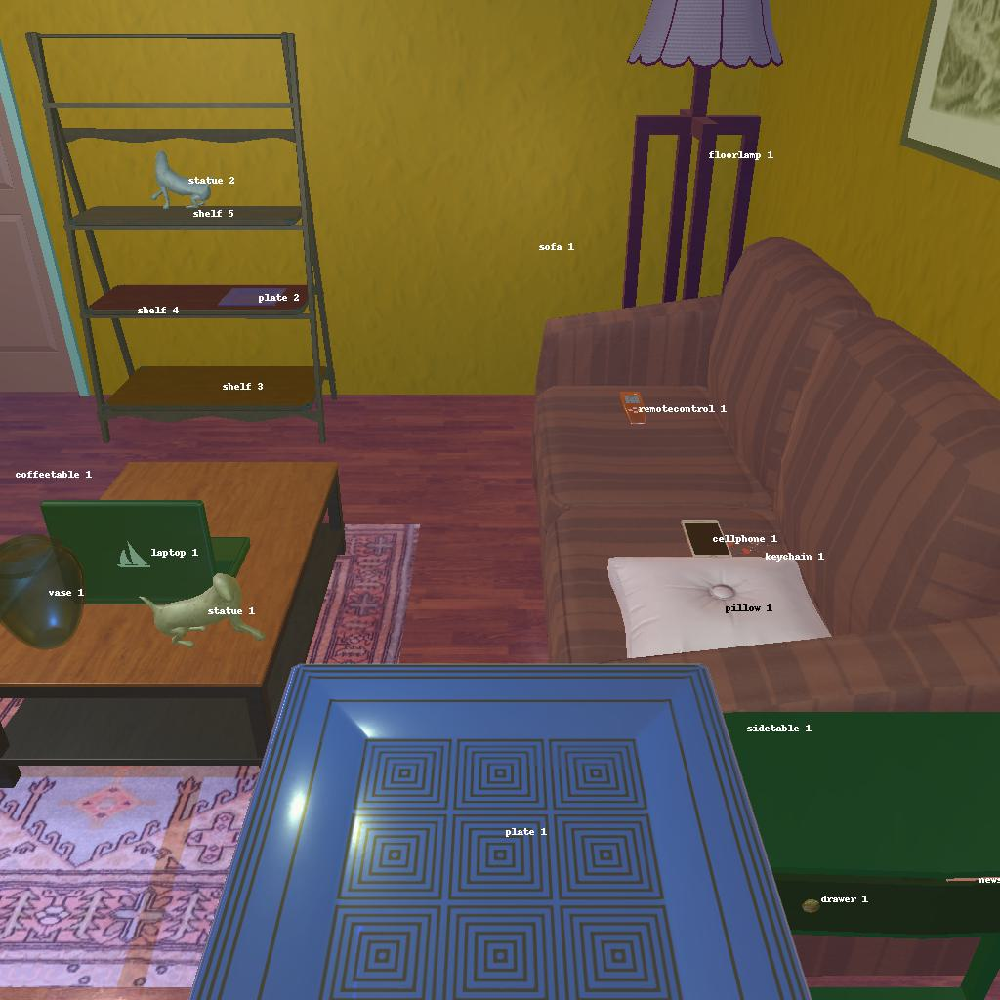

---------------------------------------------------------task: 3---------------------------------------------------------
--------------------------------------------------------------------------------------------------------------------------------------------------------------------
--------------------------------------------------------------------------------------------------------------------------------------------------------------------
Step:--------------------------------------------------------------------------5-------------------------------------------------------------------------------
----------------------------------------
VLM Prompt:
Image1:
Image2:
Image3:
**Instruction**
1. Analyze the provided image to identify all visible household objects, focusing on those relevant to the task description "look at plate under the floorlamp."
2. Use the analysis of the image and the task hint "The agent must find an object of the desired type, locate and turn on a light source with the desired object in-hand." to answer the question: what is the most reasonable action in the choices for the task description "look at plate under the floorlamp"?
4. Decide and write the answer using the template: The answer is: (i): , where i is the real number. If there is no desired object in the image, search every place based on **Initial Observation** to find the object. And if no one is exactly correct, choose a similar answer.
**Initial Observation**
You are in the middle of a room. Looking quickly around you, you can see armchair (1), garbagecan (1), tvstand (1), shelf (1-5), sofa (1), coffeetable (1), sidetable (1-2), drawer (1)
**Answer Choices**
(1): go to armchair 1
(2): go to garbagecan 1
(3): go to tvstand 1
(4): go to shelf 1
(5): go to shelf 2
(6): go to sofa 1
(7): go to coffeetable 1
(8): go to sidetable 2
(9): go to drawer 1
(10): go to shelf 3
(11): go to shelf 5
(12): put plate 1 in/on sidetable 1
(13): use floorlamp 1
(14): examine plate 1
(15): examine sidetable 1
**Answer**
Let's think step by step by following the instructions.
----------------------------------------
----------------------------------------
Original Response:
First, we need to identify all visible household objects relevant to the task description "look at plate under the floorlamp." From Image 2 and Image 3, we can see that there is a floorlamp 1 near the sofa 1, and there are plates on shelf 4 (plate 2) and coffeetable 1 (plate 1). Since the task description specifies "under the floorlamp," we can infer that the plate we are looking for is not on the shelf but rather on the coffeetable 1, which is near the floorlamp 1.
Next, we need to use the analysis of the image and task hint to decide the most reasonable action for the task description "look at plate under the floorlamp." The task hint suggests that the agent must find an object of the desired type, locate and turn on a light source with the desired object in-hand. Therefore, the agent should first go to the object, which is the plate on the coffeetable, and then use the light source, which is the floorlamp.
Given the answer choices, the agent should first go to the coffeetable (7) to get plate 1, and then use the floorlamp (13) to look at the plate under the light. However, since we can only select one action, we should prioritize getting the plate first before we can use the floorlamp.
The answer is: (7): go to coffeetable 1.
----------------------------------------
----------------------------------------
>>> Refine Original VLM Response and Get Pure Action: go to coffeetable 1
----------------------------------------
-----------------------------------------------------------------
Running time: 11.204922437667847 seconds
Total Money: 1.3218400000000003
-----------------------------------------------------------------
-----------------------------------------------------------------
Text Observation:You arrive at loc 6. On the coffeetable 1, you see a floorlamp 1, a vase 1, a pillow 1, a statue 1, a laptop 1, a remotecontrol 1, a cellphone 1, and a keychain 1.
-----------------------------------------------------------------
UNSUCCEED